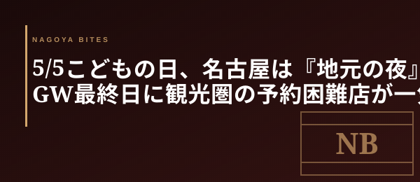

GW本番短信
5/5こどもの日、名古屋は『地元の夜』に戻る — GW最終日に観光圏の予約困難店が一気に空く理由
GW最終日、名古屋の観光圏は意外と空く。観光客のラスト帰京は午前から夕方までに集中し、19時以降の伏見・栄・名駅は地元の夜に戻る。一方、住宅街は祝日休業の店も多い — 連休最後の夜を外さないための業界人視点を整理した。

この記事はNAGOYA BITES — 名古屋の厳選1,100店超を業界視点で紹介するグルメガイドの一部です。
観光客は『最終日の夕方まで』に帰る
GW最終日の5/5は、家族連れ・遠方客の多くが午前〜夕方に新幹線・高速で帰路につく。19時以降の名古屋駅構内・栄エリアは、5/3〜5/4のピーク時と比べて人流が目に見えて落ちる。これは現場感覚だけでなく、観光圏の店の予約稼働率にも直接出る。
業界人が連休最終日にあえて観光圏を狙うのは、この『観光客ラスト帰京 → 地元の夜への切り替わり』を読んでいるから。普段は3週間先まで埋まっている伏見の小料理屋・栄の鮨店(客単価15,000円〜25,000円帯)が、5/5の20時以降だけは当日電話で滑り込めるケースがある。
住宅街の祝日休業リスクには注意
逆に、覚王山・東山公園・八事といった住宅街エリアは、祝日休業や連休一括休業の店が多く混在する。地元客で回している店ほど、GW中は家族時間として閉めるパターンが目立つ。SNSが直近1週間更新されていない店は、当日電話前にGoogleの『営業中』表示を二度確認した方がいい。客単価8,000円前後の中堅クラスでも普通に休業しているので、想定外の閉店ロスは避けたい。
連休最後を外さない3条件
業界人が5/5夜の予約に使う即決基準はシンプルに3つ。①観光圏(伏見・栄・名駅徒歩圏)、②通し営業または17時前から夜営業に入る業態、③19時以降の電話で出るかどうか。この3つが揃えば、普段なら触れない予約難店にも滑り込める可能性が高い。明日からの仕事復帰前に、連休最後の一席を取り逃さないでほしい。
Inside Perspective — 業界人の目利き
- 観光客のラスト帰京は5/5の午前〜夕方に集中。19時以降の観光圏は地元の夜に戻り、普段の予約困難店が当日対応できる窓口を持つ
- 覚王山・東山・八事など住宅街エリアは祝日休業・連休一括休業の店が混在。SNS更新が1週間止まっている店は二度確認
- 観光圏×通し営業×19時以降の電話即出 — この3条件が揃えば連休最後の予約難店に滑り込める